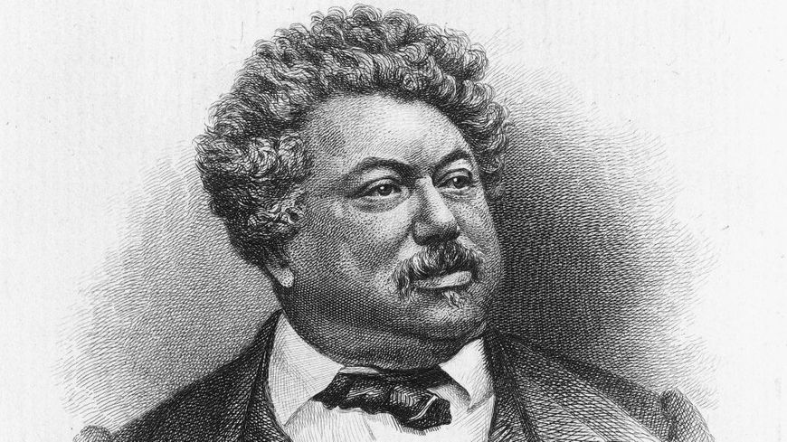

- 12 -
Alexandre Dumas

Alexandre Dumas là một cuộc đời mơ mộng, một tác giả không kiểu cách của di sản văn chương Pháp.
Một ông già cao lớn, ngồi bất động trên bờ biển Normandie, lặng lẽ chiêm ngưỡng biển cả. Đó là vào mùa thu năm 1870, Dumas (1802-1870) đến đây, sống những ngày cuối cùng với con trai ở Puys, gần thành phố Dieppe. Sau vài ngày hôn mê, ông đã trút hơi thở cuối cùng ngày 3/12, ngày mà quân Phổ tiến vào Dieppe. Khi qua đời, ông chỉ còn vài thứ đồ đạc, vài bức tranh đầy bụi tại nơi ở cuối cùng của ông ở Paris. Người được chỉ định nhận di sản là một trong những chủ nợ cũ của ông.
Có một khía cạnh “suy tàn của các thần thánh” trong lúc cuối đời của Dumas, trong những năm cuối cùng của ông, như Claude Schopp đã kể trong cuốn tiểu sử tuyệt vời mà tác giả đã dành cho ông. Bởi vì Schopp đã sống rất lâu trong hoàn cảnh thân tình với Dumas, và ở đây, tác giả đã nói với sự tôn trọng bình dị, dựa trên sự giao du lâu dài. Schopp hoàn toàn có thiện cảm với kiểu mẫu của ông và, dù cho ông không giấu giếm một cái gì về những nhược điểm của vĩ nhân, nhưng ông tha thứ tất cả. Alexandre Dumas: Thiên tài của đời sống chân dung sát gần nhất của một kiểu mẫu hết sức quyến rũ, gần như một cuốn tiểu thuyết hay nhất vào mùa hè này.
Đã có tới 301 cuốn sách xuất bản chính thức. Đã có tới 25 năm hoạt động sân khấu với 25 tập của Dumas toàn tập và nhiều vở kịch không được thu thập. Đã có những chuyến đi khắp châu Âu, từ Caucase tới Algérie. Đã có hai đứa con được thừa nhận, Alexandre và Marie, và nhiều đứa con khác mà ông nuôi dạy một phần, để rồi người đời mất dấu vết từ năm 1930. Đã có vô vàn người tình (Schopp đã thống kê tới 29 người). Đã có cuộc phiêu lưu chính trị bên cạnh Garibaldi và cuộc sống lưu vong ở Bruxelles khi Đế chế thứ hai đăng quang.
Đã có những người bạn (Hugo, Nerval, Nodier) và những kẻ thù (Balzac). Đã có những cộng sự viên (mà những đầu óc buồn rầu đã có sự bất nhã gọi là “những kẻ cộng tác kín” của nhà văn). Đã có lâu dài Monte-Cristo mà Dumas cho xây ở Marly-le-Roi miền Nam nước Pháp, nơi ông đem lại những lễ hội xa hoa trước khi đem bán lại vì sa sút. Đã có hai chiếc du thuyền Monte-Cristo và Emma (bị đắm năm 1864). Đã có những tờ báo – tờ Monte-Cristo và tờ Dartagnan do ông lãnh đạo và soạn thảo một mình. Đã có những kẻ ăn bám sự giàu có của ông (“Người ta bảo tôi là một cái rổ thủng, nhưng không phải tôi tạo ra các lỗ thủng”) và sự khốn cùng gần như đơn độc ở những năm cuối đời, trong khi công chúng xa lánh và Dumas đôi khi vất vả mới viết được.
Cuộc đời của Dumas cũng phi thường như một số nhân vật của ông. Thực vậy, Dumas đã quyến rũ thế kỷ XIX. Không ai là hiện thân nền văn chương Pháp hay hơn ông ở thời đại đó. Hernani có thể chứa đựng nhiều bài thơ rực rỡ hơn, nhưng chính vua Henri III và triều đình đã mở đầu tấn bi kịch lãng mạn đó. Chính trong Ba người lính ngự lâm pháo thủ mà triều đại vua Louis XIII sống lại mãi mãi. Chắc chắn có những tiểu thuyết được xây dựng tốt hơn Tử tước Bragelonne, nhưng không ai có thể đem lại một cách chính xác và xót xa cảm giác về thời gian trôi qua, về những cuộc đời bại hoại (và Proust, người đã đề cao ông hết mức, đã không lầm: Đó là một trong những cuốn tiểu thuyết vĩ đại nhất của nền văn chương của chúng ta). Và Bá tước Monte-Cristo cũng như Tấn trò đời đã tỏ rõ guồng máy của chế độ quân chủ như thế nào (Dù người ta giận Balzac đôi chút vì đã coi thường Dumas – nhưng lòng ganh tị đã giải thích nhiều chuyện…).
Người ta trách cứ ông “viết tồi”. Còn ông tung tăng nhảy nhót, thoải mái trong giọng văn của mình như những tác giả lớn của thế kỷ XVII. Người ta trách cứ các cộng sự của ông. Thật phi lý. Liệu người ta có trách cứ John Ford tại sao lại là nhà đạo diễn? Thế mà Dumas có những cuốn tiểu thuyết của ông cũng như Ford với những bộ phim của mình. Ông không phải là người bịa ra các tình thế (cả La Fontaine và Molière cũng thế), nhưng là một người kể chuyện đặc biệt, đầy năng khiếu về văn phong và dàn dựng. Các “cộng sự viên” của ông cung cấp cho ông người một ý kiến khởi đầu, người một phác thảo cho một cảnh. Dumas thường tăng gấp đôi, gấp ba một văn bản mà người ta đưa cho ông, đôi khi ông chỉ bằng lòng thay đổi đôi chút.
Người ta còn trách cứ ông không phải là nhà tâm lý học, trong khi là nhà sáng tạo ra những nhân vật sẵn có một tầm cỡ thần thoại, ông đã biết (khác với Hugo khi sáng tạo ra Jean Valjean trong Những người khốn khổ) trang bị cho họ những tính cách nổi bật, đầy sắc thái. Ai có thể quên được Aramis, con người phức tạp nhất trong số ngự lâm pháo thủ, bị mắc kẹt giữa tình bạn và tính ích kỷ, lòng trung thành và tham vọng của anh?
Cuối cùng, người ta được thấy một Dumas - đầu bếp.
Sau khi đã hoàn thành hai cuốn tiểu thuyết để làm di cảo Nỗi khiếp sợ người Phổ và Sự sáng tạo và chuộc tội, ông đã bắt tay vào viết cuốn Từ điển lớn về nghệ thuật nấu ăn. Ông Dumas đó có nguy cơ không được biết đến: Những món ăn của ông, cũng như chính ông, đã quá lớn hơn thực tế và không thích ứng với bao tử nhỏ của chúng ta!
HOÀNG HƯNG
MỘT THIÊN TÀI PHÓNG TÚNG
 .
.
Alexandre Dumas ( Alexandre Dumas cha) (1802 - 1870 )
Một ông già có thân hình to lớn ngồi bất động trên bãi biển Normandie ngắm nhìn biển cả êm đềm. Hai đứa cháu gái lần lượt mang đến cho ông những con sò chúng vừa nhặt được. Ông già đó là Alexandre Dumas và hai bé gái đó là Colette và Jannine, cháu nội của ông. Dumas đến để chết ở nhà con trai ở Puys, gần Dieppe. Cô con gái của ông vuốt mắt cho ông hôm 3/12/1870 sau vài ngày hôn mê.
Sau khi mất, Dumas chỉ còn lại vài thứ đồ đạc, vài bức tranh đầy bụi trong chỗ ở cuối cùng tại đại lộ Malesherbed-Paris. Ông đã không biết bao lần di chuyển chỗ ở. Người thu nhận toàn bộ tài sản của ông là một trong những người chủ nợ cũ của ông, một viên thư lại tỉnh nhỏ. Qua ông ta, người con trai của Dumas buộc phải mua lại toàn bộ bản quyền văn học của cha mình…
Là một thanh niên tỉnh lẻ, Dumas đến Paris lúc 20 tuổi, như nhiều người khác, đi tìm vận may. Ông thuê một phòng nhỏ tại khu người Italia để ở. Một hôm ông bắt gặp trên cầu thang một cô hàng xóm tóc vàng, hiền dịu đang đỏ mặt nhìn chàng trai hộ pháp, tóc xoăn tít, da bánh mật. Một năm sau đó, một chú bé bụ bẫm ra đời từ cái nhìn đắm đuối ấy và những lần gặp sau đó. Họ đặt tên cho chú bé là Alexandre và gộp hai căn phòng làm một… Không gì đẹp hơn nhìn Dumas làm việc. Ông viết thẳng một mạch không gạch xóa, không sửa chữa, cãi nhau với các nhân vật của mình và cười ha hả khi họ “phản đối” ông. Thời gian thúc bách, phải lướt thật nhanh ngòi bút, nhưng trí tưởng tượng còn phi nhanh hơn. Để được lợi thời gian, ông bỏ tuốt tuột các dấu chấm phẩy và kéo nhằng chữ này liền với chữ kia, sau đó thư ký ông mới sửa chữa lại bản thảo và đưa cho nhà in. Nếu có ai đến thăm, ông chìa bàn tay trái ra bắt và vẫn tiếp tục viết.
Dumas làm việc rất có tổ chức, ông dùng những tờ giấy xanh để viết tiểu thuyết, giấy hồng để viết kịch và giấy vàng để làm thơ. Những bức tượng nhỏ bằng bìa thể hiện những nhân vật của quyển tiểu thuyết, khi một bức tượng nằm xuống, tức là nhân vật đã kết thúc cuộc sống. Một hôm cậu con trai Dumas thấy cha mình đi ra mắt đẫm lệ, anh hỏi ông vì sao mà buồn thế, ông trả lời trong thổn thức: “Porthos đã chết, cha vừa giết chết anh ta” rồi ông òa lên khóc (Porthos: Nhân vật đáng yêu trong Ba chàng ngự lâm).
Vitor Hugo đã nói về Dumas như sau: “Alexandre là thiên tài của cuộc đời, chân dung rất gần gũi với một kiểu mẫu quyến rũ mê hồn, như là một quyển tiểu thuyết, một trong “những mùa hè tuyệt vời” nhất, vì Dumas không đơn giản muốn làm ra huyền thoại…”.
Ông đã cho ra đời 301 cuốn tiểu thuyết (đã xuất bản) cùng với Dumas toàn tập. Chưa hết, ông còn 50 năm viết kịch với 25 tập và tác phẩm trọn bộ (đã xuất bản). Còn nhiều vở kịch chưa thu thập hết vì ông lấy tên của cộng tác viên. Ông còn những quyển sách nói về cuộc du ngoạn khắp đông đô ở châu Âu, ở Causase ở Algérie… Khi Ba chàng ngự lâm xuất hiện từng đợt, từng đợt trên báo Le Monde, ngày nào cũng vậy, cả nước Pháp xếp hàng rồng rắn trước cửa hàng bán báo nhiều giờ liền trước khi báo đưa đến. Dumas đã thôi miên cả nước Pháp bằng Ba chàng ngự lâm…
Ông có hai đứa con được thừa nhận, đó là Alexandre và Marie, cùng cha khác mẹ và nhiều đứa con khác không được công nhận “rải rác khắp nước Pháp”. Ông có vô số tình nhân. Người ta liệt kê được sơ sơ có 29 “Quid Dumas”. Cùng một lúc ông quan hệ với vài người vợ và ba bốn cô “không đứng đắn”. Ông đài thọ cho cả một lô nhân tình, nhân ngãi và những đứa con mập mạp, tóc xoăn tít, da nâu hồng giống ông như đúc. Chúng ngơ ngác nhìn ông bố từ đâu đến vuốt ve mơn trớn cười, đùa với chúng.
Ông cũng đã từng theo Garibaldi làm một nhà chính trị kiểu Garibaldi và bị trục xuất sang Bỉ sau sự kiện đế chế thứ hai. Cô con gái ông, Marie Dumas đã đi theo ông trong những ngày lưu đày. Ông đã từng có lâu đài Monte Cristo xây dựng ở Marly-le-Roi – tác giả Ba chàng ngự lâm bị quyến rũ bởi cảnh đẹp mê hồn của một nơi hoang dại đầy thơ mộng, đã mua hai hecta đất trên đồi Port Marly làm nơi ở. Theo trí tưởng tượng của mình, Dumas cho xây dựng ở đấy một lâu đài nhỏ xinh xắn theo kiểu tân Phục hưng, một ngôi vườn kiểu Anh và một tháp ngà để viết, tất cả được mệnh danh là lâu đài If. Nhưng rồi bị chủ nợ quấy rầy suốt ngày, Dumas không được hưởng lâu nơi tháp ngà của mình mà phải ra đi năm 1851. Sinh thời Dumas rất thích nước, ông yêu cầu người làm vườn đổ đầy nước trong vườn, nước tràn ngập lao xuống đồi kêu róc rách trong như phalê. Ông cũng tưởng tượng ra một bức tiểu họa ngập nước, ở giữa bao la nước đó nổi lên lâu đài If. Ông đã từng có hai con tàu, tàu Monte Cristo và tàu Emma. Tàu Monte Cristo ông chưa bao giờ sử dụng đến vì nó mang cờ hiệu Hy Lạp, còn tàu Emma bị chìm năm 1864 và hai thủy thủ bị mất tích. Ông cũng có hai tờ báo, tờ Monte Cristo và tờ Le Dartagnan mà ông vừa là chủ báo vừa là biên tập. Ông cũng từng cùng khổ cô đơn trong những năm cuộc đời, thời mà công chúng thì xa lánh và Dumas, đôi lúc khó khăn lắm mới viết được. Ông cũng có những kẻ giàu sang ăn bám. Ông cũng có những kẻ thù trong giới nhà văn, nghệ sĩ… Cuộc đời của Dumas cũng phi thường như một số nhân vật của ông. Khi một tập tranh truyện nói về Dumas được xuất bản, người ta đếm được 386 chân dung và biếm họa Dumas. Trong lời tựa cho tập tranh, nhà văn Jacques Laurent nói: “Người ta yêu Dumas đến mức xem ông như người cùng sống bên cạnh mình, người ta kiêu hãnh vì Dumas, chúng tôi kiêu hãnh vì Dumas, trên thực tế ông đã quyến rũ mê hồn thế kỷ ông. Không một ai hơn ông hiện thân cho văn học Pháp thời kỳ đó”. Dumas không chỉ có công chúng hâm mộ mà còn có rất nhiều nhà văn, nhà thơ lỗi lạc yêu thích hình thành một câu lạc bộ Dumas. Hội viên của câu lạc bộ đó có Victor Hugo, Baudelaire, Lamartine, Vigny, Michelet, Stevenson v.v. Và sau này những văn nghệ sĩ gần chúng ta hơn như Proust, Léon Daudet, Paul Morand, Jacques Laurent, Antoine Blondon… Năm 1970, kỷ niệm 100 năm ngày mất của Dumas, hội “Những người bạn của Dumas” ra đời, do nhà văn Alain Decaux, Bộ trưởng Văn hóa Pháp làm Chủ tịch, cùng năm đó lâu đài Monte Cristo được xếp hạng di tích văn hóa thế giới. Lâu đài được trùng tu lại hoàn chỉnh từ 1/6/1996. 88 tác phẩm của Dumas được trịnh trọng khắc lên chính giữa lâu đài. Để có được 88 tác phẩm đó, Dumas đã trốn biệt không biết bao nhiêu khách khứa, bao nhiêu người chầu chực tràn ngập cả phòng khách…
Đứa bé con của cô hàng xóm năm xưa giờ đã lớn. Đó là một chàng trai cao to vạm vỡ như bố và thành công lớn với tiểu thuyết Trà hoa nữ. Cả Dumas cha lẫn Dumas con đều nổi tiếng. Hai bố con yêu quý nhau, ngưỡng mộ nhau và người này thề rằng, người kia là nhà viết kịch lớn nhất thời đại mình. Nhưng Dumas con nghiêm chỉnh chứ không như Dumas bố và không ưa cuộc sống buông thả bừa bãi của ông bố. Anh thường kêu ca vì cuộc sống trái luân thường đạo lý của ông già. Dumas cha ngơ ngác nhìn con, lẩm bẩm, thầm cảm phục sự nghiêm túc của con, và mỗi khi người nhà báo tin con trai đến thăm, ông vội giấu phụ nữ vào trong tủ đứng và tống khách vay nợ xuống nhà kho. Khi biết mình sắp chết, ông đến nhà con trai: “Bố đến để chết ở nhà con đây, ồ cái chết không làm cho bố sợ đâu nhé, nó không ác với bố đâu vì bố sẽ kể cho nó nghe một câu chuyện…”. Ông mất trong tay con gái mình là Marie Dumas, thọ 68 tuổi.
NGUYỄN NGỌC CHƯƠNG